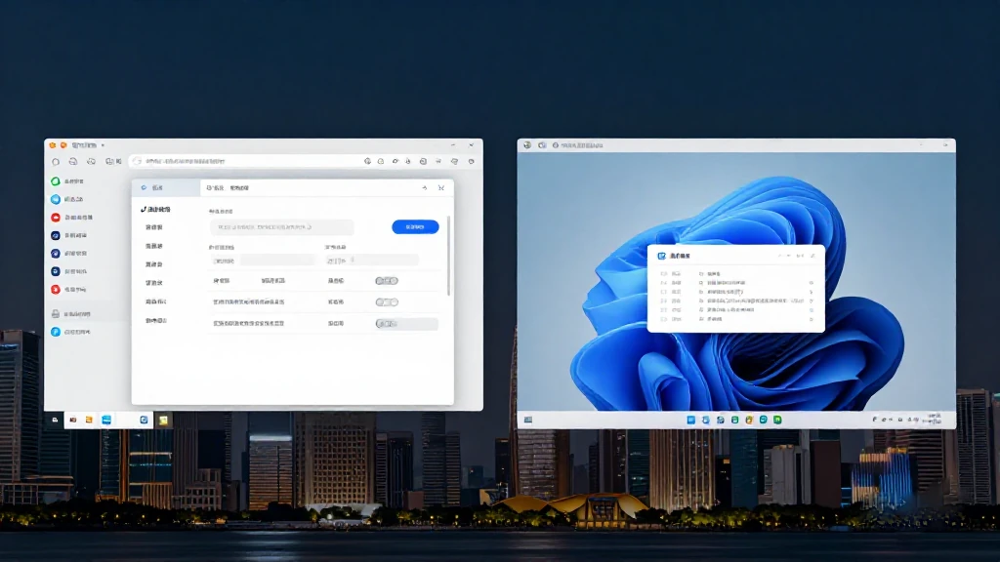
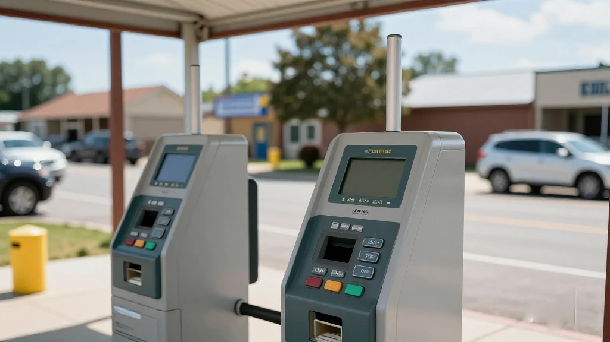
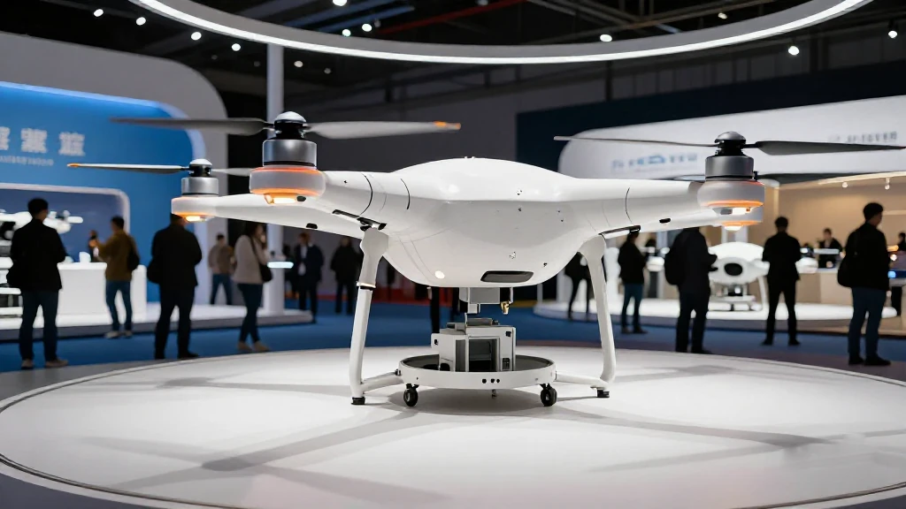
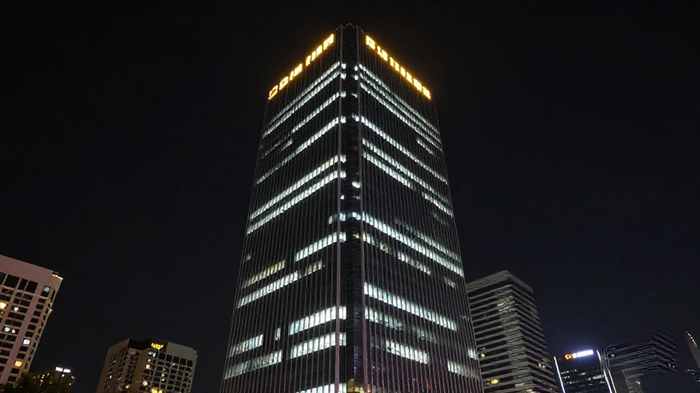

圖片由 AI輔助創作（Z-Image-Turbo）Image by AI (Z-Image-Turbo)
【鄭哥點評】欄目：鄭哥博客點評｜日期：2026-11-11
今日五條，兩條喺廣州、三條喺深圳，全部係「錢點樣到手」。南沙向港澳青年開閘，十一月一日到十二月三十一日收表；深圳向重點「小巨人」落期初一半獎補；商務局第二批中央資金同週開檔。其餘兩條：廣州科創大賽把獎金變股本，高交會月底開鑼。最值得記住嘅一句，係深圳通知寫嘅「未達二千萬元，收回資金」——補貼唔再係禮物，係一份要對賭嘅合約。
圖片由 AI輔助創作（Z-Image-Turbo）Image by AI (Z-Image-Turbo)
一、南沙港澳青年補貼：十一月一日開閘，逾期不再追溯
南沙區人社局十月二十九日發通知：二〇二六年度港澳青年就業創業補貼，申報期十一月一日至十二月三十一日，走「南沙@i企」線上提交。二〇二六年一至十月符合薪金補貼、綜合補助條件嘅港澳青年，要在這期申請；逾期或材料唔齊，不再追溯補辦。
門檻逐條對：四十五周歲及以下、中國國籍嘅香港或澳門居民，永久非永久都算，企業要在南沙港澳青創基地實際經營，港澳青年股東持股兩成半以上；場地人均十平方米，申請前連續六個月有員工參保，統計同稅務關係都在南沙。通知明寫「社會保險關係不在南沙區的，不予資金支持」——先查社保，再備料。
來源：廣州市南沙區人民政府門戶網站《關於開展2026年度廣州市南沙區促進港澳青年就業創業補貼申領工作的通知》，2026年10月29日｜http://www.gzns.gov.cn/zwgk/zcwjjjd/zcdx/content/post_11075977.html
圖片由 AI輔助創作（Z-Image-Turbo）Image by AI (Z-Image-Turbo)
二、深圳「小巨人」：期初一半獎補，投資未達二千萬要退回
深圳市中小企業服務局十月三十日發文、十一月二日上網：二〇二六年中央中小企業發展專項資金第二輪第三批重點「小巨人」企業期初獎補資金計劃下達。企業要在十一月五日前，把《賬戶證明》《收款收據》《承諾函》上傳「深i企」，以「免申即享」撥付，逾期系統關門。名單已過公示，唔使寫項目書，但收款文件要自己交。
錢唔係白拿：每批次分兩次下達，期初五成，期末按績效評價再下剩餘。推進計劃投資總額未達二千萬元嘅，收回資金；達標但未完成任務嘅，不再安排剩餘。錢不得用於工資、水電、房租、物業、餐飲，亦不得買樓買股票，每三個月報一次進展。我判斷二千萬呢條線先係重點：政府嗰一半係跟住你自己嗰二千萬入場。
來源：深圳政府在線《市中小企業服務局關於下達2026年中央中小企業發展專項資金第二輪第三批重點「小巨人」企業實施期初獎補資金資助計劃的通知》，2026年11月2日｜https://www.sz.gov.cn/cn/xxgk/zfxxgj/tzgg/content/post_13048624.html

圖片由 AI輔助創作（Z-Image-Turbo）Image by AI (Z-Image-Turbo)
三、深圳國際化消費環境：第二批中央資金開檔
深圳市商務局十一月四日發通知，啟動二〇二六年度中央資金（國際化消費環境試點建設事項）第二批申報，依據係《深圳市國際化消費環境建設試點專項資金管理辦法》（深商務規〔2026〕3號）。通知正文冇金額、冇截止日，全部收在附件《申報指南》。
呢條我睇得保守。中央資金用喺試點城市建設，多數係事後獎補、按實際投入比例核，唔係先到先得——但我未見細則，要開指南核實。第二批開檔，通常意味第一批仲有額度或者有新場景補位。做消費品牌、跨境電商、零售科技嘅公司，值得睇。
來源：深圳政府在線《深圳市商務局關於發布〈深圳市商務局2026年中央資金申報指南-國際化消費環境試點建設事項（第二批）〉的通知》，2026年11月4日｜https://www.sz.gov.cn/szzt2010/wgkzl/jcgk/jcygk/zdzcjc/content/post_13053437.html
圖片由 AI輔助創作（Z-Image-Turbo）Image by AI (Z-Image-Turbo)
四、廣州科創大賽決賽：獎金變股本，最高二百萬
二〇二六年廣州科技創新創業大賽行業賽決賽，十月下旬在廣州歸谷科技園開賽。經初賽遴選，六百餘家科創企業與團隊晉級，一連一週分賽道路演。二十條賽道，八條屬未來產業：智能無人系統、具身智能、量子科技、腦機接口、器官醫學等。
最大改動在錢嘅用法。組委會把「補改投」試點接進賽事：一、二、三等獎企業擇優可獲最高二百萬元政策性股權投資，重點投未拿到外部風投嘅種子期硬科技項目，由政府信用墊底。現金獎池超過一千五百萬元，廣州金控旗下直投、科創母、天使母基金開快速盡調通道；未來產業賽道首次取消地域限制。我判斷實際意義係：用一張政府投資意向書去同銀行講價。
來源：中宏網《引育未來產業新動能 2026年廣州科技創新創業大賽行業賽決賽火熱開賽》，2026年10月27日｜https://www.zhonghongwang.com/show-140-476311-1.html

圖片由 AI輔助創作（Z-Image-Turbo）Image by AI (Z-Image-Turbo)
五、高交會十一月二十六日開鑼：低空經濟館兩萬平方米
據高交會官網，第二十八屆中國國際高新技術成果交易會定於十一月二十六日至二十八日，在深圳國際會展中心（寶安）舉行；今屆特設低空經濟與通用航空產業展覽會，面積超過兩萬平方米，預計超過三百家產業鏈企業。同一頁提到，深圳有全國首部低空經濟立法、超過一千九百家產業鏈企業。
上一屆嘅數可以參考：三天入場觀眾突破四十五萬人次，意向成交同投融資金額突破一千七百億元。對創業公司，價值唔在展位，而在同期嘅投融資大會。我判斷今年低空館會逼爆：政策、訂單、供應商同週同館出現，掃一次館比在網上睇一百份報告快。
來源：高交會官方網站《2026全球獨角獸榜發布！中國佔全球獨角獸三分之二，大疆之後誰在追趕？》，2026年6月30日｜https://www.chtf.com/plus/view.php?aid=1197

圖片由 AI輔助創作（Z-Image-Turbo）Image by AI (Z-Image-Turbo)
六、鄭哥點評
第一，今日五條有四條係「錢點樣到手」。共通點係：政府愈來愈少直接派錢，多數要企業先自己投一筆，或者先過績效評價。想拿錢，先證明唔靠呢筆錢都走得落去。
第二，最值得抄嘅係「未達二千萬，收回」。呢種寫法把補貼變成對賭：政府出一半，你跟二千萬。簽之前計清楚一年投得出幾多，計唔清就唔好簽。高交會月底開幕，正好去睇同行點用呢筆錢。
圖片由 AI輔助創作（Z-Image-Turbo）Image by AI (Z-Image-Turbo)
\[Zheng Ge's Take\] Column: Zheng Ge's blog commentary | Date: 2026-11-11
Five stories today, two in Guangzhou and three in Shenzhen, all about how money actually reaches a company. Nansha opens its window for Hong Kong and Macao youth, taking forms from 1 November to 31 December. Shenzhen releases half of its little-giant grant up front. The commerce bureau opens a second batch of central funds the same week. The other two are about method: a contest turning prizes into equity, and a trade fair opening at month end. The line to remember is the Shenzhen notice wording: fall short of RMB 20 million and the money goes back. A subsidy is no longer a gift but a contract with a wager inside.
圖片由 AI輔助創作（Z-Image-Turbo）Image by AI (Z-Image-Turbo)
1. Nansha opens Hong Kong and Macao youth subsidies, with no retroactive claims
The Nansha District human resources bureau issued a notice on 29 October: applications for the 2026 round of employment and startup subsidies for Hong Kong and Macao youth run from 1 November to 31 December on the Nansha@iqi platform. Anyone who met the salary subsidy or general allowance conditions between January and October 2026 must apply in this window; late or incomplete filings are not handled retroactively.
Check each threshold. The person: a Hong Kong or Macao resident of Chinese nationality aged 45 or under, permanent or not. The company: real operations in a designated Nansha base, with Hong Kong or Macao shareholders holding 25% or more. The premises: ten square metres per head, six consecutive months of staff on social insurance, and both the statistical and tax relationship in Nansha. The notice says plainly that applicants whose social insurance is not held in Nansha will not be funded, so check the record first.
Source: 廣州市南沙區人民政府門戶網站《關於開展2026年度廣州市南沙區促進港澳青年就業創業補貼申領工作的通知》，2026年10月29日 | http://www.gzns.gov.cn/zwgk/zcwjjjd/zcdx/content/post_11075977.html
圖片由 AI輔助創作（Z-Image-Turbo）Image by AI (Z-Image-Turbo)
2. Shenzhen little giants: half the grant up front, clawed back if investment falls short
The Shenzhen SME Service Bureau issued the document on 30 October and posted it on 2 November: first-installment grants for key little-giant firms under the 2026 central fund, second round, third batch, have been allocated. Companies had to upload an account certificate, a receipt and a commitment letter to the Shenzhen iQi platform by 5 November, disbursed as a no-application benefit; after that the system closes. The list had already cleared public notice, so no proposal was needed, but the payment papers were the company own job.
The money is not free. Each batch comes in two instalments: half up front, the rest after the performance review. If the investment plan falls below RMB 20 million, the funds are recovered; if it clears that bar but targets are missed, no further money is arranged. It may not pay for salaries, utilities, rent, property management or catering, nor for property, funds or shares, and progress is reported every three months. My reading: the RMB 20 million line is the point, since the government half follows your own 20 million in.
Source: 深圳政府在線《市中小企業服務局關於下達2026年中央中小企業發展專項資金第二輪第三批重點「小巨人」企業實施期初獎補資金資助計劃的通知》，2026年11月2日 | https://www.sz.gov.cn/cn/xxgk/zfxxgj/tzgg/content/post_13048624.html
圖片由 AI輔助創作（Z-Image-Turbo）Image by AI (Z-Image-Turbo)
3. Shenzhen international consumption pilot opens a second batch of central funds
The Shenzhen Commerce Bureau issued a notice on 4 November opening the second batch of 2026 central funds for the international consumption environment pilot, under the city fund rules for the pilot (Shen Shang Gui 2026 No. 3). The notice carries no amount and no deadline; every figure sits in the attached application guide.
I am cautious here. Central money for pilot-city construction is usually reimbursed after the fact and calculated as a share of actual spending rather than handed out first come, first served, though I have not seen the detail and it needs checking in the guide. A second batch normally means unused quota or new scenarios being filled in. Consumer brands, cross-border e-commerce, payment and retail tech firms could justify half an hour on the guide.
Source: 深圳政府在線《深圳市商務局關於發布〈深圳市商務局2026年中央資金申報指南-國際化消費環境試點建設事項（第二批）〉的通知》，2026年11月4日 | https://www.sz.gov.cn/szzt2010/wgkzl/jcgk/jcygk/zdzcjc/content/post_13053437.html
圖片由 AI輔助創作（Z-Image-Turbo）Image by AI (Z-Image-Turbo)
4. Guangzhou startup contest finals: prize money converted into equity, up to RMB 2m
The industry finals of the 2026 Guangzhou technology startup competition opened in late October at Guangzhou Guigu Science Park. After preliminary rounds and partner referrals, more than 600 companies and teams advanced and pitched over one week. Of the 20 tracks, eight cover future industries: unmanned systems, embodied intelligence, cell and gene technology, quantum technology, deep sea and space, high-end instruments, brain-computer interfaces, and organ medicine.
The real change is in how the money works. The organisers wired the city grant-to-equity pilot into the contest: prize winners can, on merit, receive up to RMB 2 million in policy-driven equity investment, aimed at seed-stage hard-tech projects that have not raised outside venture capital, with the government balance sheet acting as the first institutional cheque. The cash pool exceeds RMB 15 million, and funds under Guangzhou Financial Holdings run a fast due-diligence channel; the future-industry tracks dropped geographic limits for the first time. In practice, the prize is a letter of intent you can take to a bank.
Source: 中宏網《引育未來產業新動能 2026年廣州科技創新創業大賽行業賽決賽火熱開賽》，2026年10月27日 | https://www.zhonghongwang.com/show-140-476311-1.html
圖片由 AI輔助創作（Z-Image-Turbo）Image by AI (Z-Image-Turbo)
5. CHTF opens on 26 November with a 20,000 square metre low-altitude hall
According to the CHTF official site, the 28th China Hi-Tech Fair runs from 26 to 28 November at the Shenzhen World Exhibition and Convention Center in Baoan, with a dedicated low-altitude economy and general aviation exhibition covering more than 20,000 square metres and expecting over 300 supply chain firms. The same page notes Shenzhen has the country first low-altitude legislation, more than 1,900 companies in the chain, and plans for 1,200 vertiports.
Last year gives the scale: more than 450,000 visitors over three days, with intended deals plus investment and financing above RMB 170 billion. For a startup the value is not the booth but the investment conferences and showcases running alongside. My call is that the low-altitude hall will be packed, with policy, orders and suppliers in one hall in one week, and one walk through beats a hundred reports online.
Source: 高交會官方網站《2026全球獨角獸榜發布！中國佔全球獨角獸三分之二，大疆之後誰在追趕？》，2026年6月30日 | https://www.chtf.com/plus/view.php?aid=1197
圖片由 AI輔助創作（Z-Image-Turbo）Image by AI (Z-Image-Turbo)
6. Zheng Ge's Take
First, four of the five items are about how money arrives. The pattern: fewer straight grants, more cases where the company must invest first or clear a performance review. If you want the money, show you can survive without it.
Second, the line worth copying is: fall short of 20 million and it comes back. That makes a subsidy a wager, with government putting in half and you matching 20 million. Do the arithmetic before signing; if it does not add up, do not sign. The fair at month end is where to see how peers spend it.